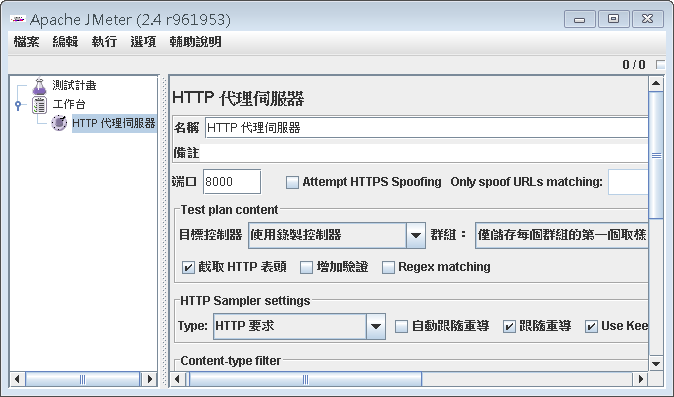
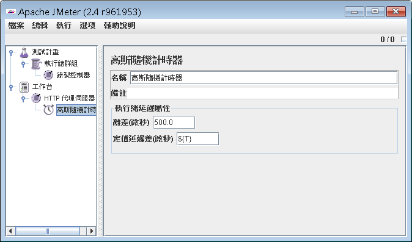
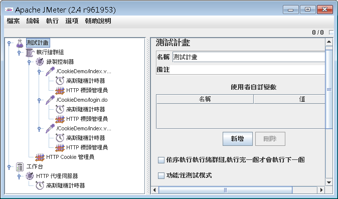

在JMeter中你可以設置HTTP代理伺服器，這會啟動一個小型的代理伺服器，而後你可以在 瀏覽器中設置代理伺服器位址與連接埠，你在瀏覽器中瀏覽網站，進行真正的瀏覽行為，代理伺服器會錄製下你所進行的每個請求。
要新增代理伺服器，請在JMeter的工作台（workbench）中按右鍵執行「新增/非測試元素/HTTP 代理伺服器」，在工作台中新增，是因為代理伺服器並不是用來測試，而是用來錄製的。

代理伺服器預設連接埠是8080，你可以自行修改，代理伺服器會自動記錄標頭訊息，如果有表單提交，也會將提交的參數值加以記錄。
目標控制器用來讓你指定錄製下來的請求之存放位置，你可以在測試計畫的執行緒群組中「新增/邏輯控制器/錄製控制器」，則代理伺服器就會自動找尋錄製控制器並將錄製下來的資料存放在錄製控制器中。
群組可以讓你設定如何組織所產生的元素，預設是不分組，這會錄製所有的請求，包括網頁中所嵌入的圖像等，建議可以使用僅儲存每個群組的第一個取樣。
代理伺服器預設僅錄製請求，為了模擬使用者的思考與請求時間，可以在代理伺服器下新增一個計時器子元素，例如「新增/計時器/高斯隨機計時器」：

之後在錄製時，每個請求之下就會自動新增一個計時器，以模擬每個請求之間的延遲行為，對於真正錄製時的延遲，代理伺服器儲存在JMeter的T變數中，所 以你在定值延遲差中，可以直接使用\${T}，這會在新增的計時器中，記錄下真正的操作延遲時間，之後在測試時，每個請求來到後，必須經過延遲時間，才會開 始下一個請求。
完成以上設定，儲存測試計畫，按下「HTTP 代理伺服器」中的「開始」即可啟動代理伺服器，接著在瀏覽器中設置代理伺服器資訊，開始請求你想要測試的網站，你可以看到所有的請求都被錄下來…以 驗證回覆結果 中的例子來說，由於需要儲存 Cookie，所以你再自行新增「HTTP Cookie 管理員」，並進行各項操作，結果如下：
